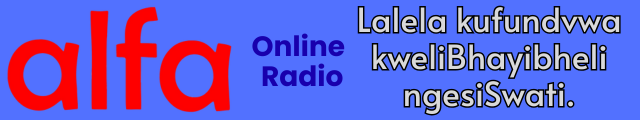

Khetha "Dlala ▶️ Play" kute ulalele kufundvwa kweBhayibheli.
⚠️🔇 ekuqaleni kunekuthula cishe kwemizuzwana leli-10–20,
⚠️📢 bese kulandzela sifihlakhondle sekutsengisa ngolimi lwangaphandle
(semizuzwana leli-30–40) ngaphambi kwekuti kufundvo kwemagama
eBhayibheli kucale.